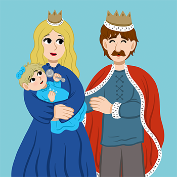
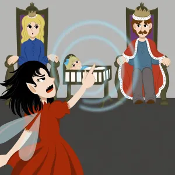
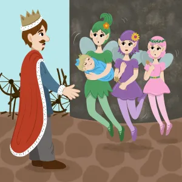
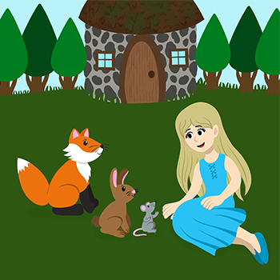
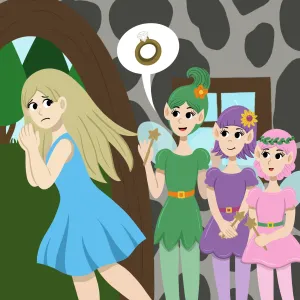
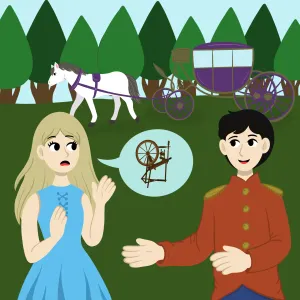
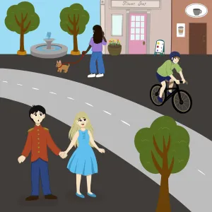

Long ago in France there lived a King and Queen. More than anything, they longed for a child. At last, to their great happiness, the Queen gave birth to a little girl. All the bells in the land were rung with joy. The King and Queen invited all the fairies in the kingdom to the Naming Party for the baby. And what a party it was! Plates and silverware of pure gold were set with care before each guest. But one fairy, Maleficent, who had left 50 years before and had not been seen in all that time, showed up at the door. Quickly the King and Queen found a place setting for the new guest. But alas, the plate and the silverware were not of pure gold. This made the old fairy very angry. Soon it was time for each Fairy to give her blessing to the baby. When it came to Maleficent’s turn, she stood up and pointed her long finger at the sleeping baby girl in the cradle. “I declare, before all of you,” Maleficent called out, “that this child, on her 16th birthday, shall prick her finger on the spindle of a spinning wheel, and die!”
With a whoosh of smoke, the evil fairy vanished. Everyone cried out with alarm, as you can imagine. But one fairy had not yet given her blessing. The King and Queen asked this fairy, whose name was Merryweather, to reverse the curse. Merryweather shook her head sadly – that was not possible. But she could soften the curse. “On her 16th birthday,” she said, “when the princess pricks her finger on the spinning wheel, instead of dying she will fall asleep for 100 years.” “One hundred years!” said the Queen. “After our daughter turns 16, we will not know her anymore!” The King ordered every spinning wheel in the kingdom to be brought to the palace and burned. To be extra sure the princess would not be anywhere near a spinning wheel, he also ordered the fairy Merryweather, along with two other fairies, Flora and Fauna, to take the baby far away.
The fairies would raise the child in a cottage, deep in the woods. There, they would keep her safe until after her 16th birthday. After that day it would be safe to bring back the princess, who had been named Aurora, to the castle. Aurora grew up knowing no others than the three fairies, whom she knew as her aunts. The animals of the forest were her friends. The birds and the deer, the chipmunks and the rabbits, followed her around as she fed them treats and cooed to them. From the time she was little, Aurora was told she must stay inside the hills that surrounded them. She did not mind that in the least. The woods were wide and deep inside the hills, and there was plenty of room for her to play. One day, Aurora came home to the cottage to find her three aunts preparing for a party. “What’s going on?” she said. “Tonight we will celebrate your 16th birthday!” said Flora. “It is?” said Aurora. “That means tomorrow I go back to the castle!” “Yes!” said Merryweather. “We have kept you safe from that spinning wheel for 16 years. Soon it will be time for you to take up your royal life as a princess.”
“Married, already?” said Aurora. “Do you know who I’m supposed to marry?” “We do,” said Fauna with a wave of her hand, “but there’s no need to worry about that. Even if he’s a bit strange, some might say a bit horrid, you won’t have to spend much time with him,after all.” “And he does come from a fine family,” Flora added with a quick smile. “Wait a minute!” said Aurora, pulling back. “Why do you say he’s a bit horrid?” “It’s best not focus on such things, dear,” said Merryweather. “Just do everything your husband tells you to do,” said Flora, “and you will be fine.” “This is not turning out like I thought!” cried Aurora. “How long do I have to stay married?”
“No, no, this is all wrong!” cried Aurora. She turned away, then said in a firm voice, “I would rather prick my finger on a spinning wheel and fall asleep for 100 years than have to marry someone I don't want to marry! Maybe by the time I wake up, people won’t have to get married if they don’t want to!” And she ran out the door. “Dear me,” said Merryweather to the other two fairies. “I don’t believe that went over very well.” Aurora ran deep into the woods where her animal friends lived. A deer hopped beside her, along with the rabbits and chipmunks. “We have to get out of here,” she said to all of them. Then pointing to a mountain pass, she said, “We will go right through the hills.” Soon Aurora came to a road. In the distance was a carriage, coming closer to her. As the rider approached, her animal friends scattered. “Hail!” said the stranger. “I’m afraid my carriage scared away your pets. May I give you a lift?” Aurora had never seen a man before. But she couldn’t think about that – unless she could find a spinning wheel, the very next day her aunts would take her back to the palace. “Actually,” said Aurora to the stranger, “there is something I need a great deal.” “What’s that?” said the stranger, hopping out of the carriage. Very nicely dressed was he, and well mannered, too.
“A spinning wheel,” said Aurora. “A spinning wheel!” said the stranger. “But there are none left in the land – everyone knows that.” “Well, you see,” said Aurora, rubbing her hands together, “I have this friend. She needs a spinning wheel in the worst way.” Aurora looked directly at the stranger. “It’s a matter of life or death.” The stranger looked at Aurora’s eyes. At last, he said, “I may know of one,” he said. “But this needs to stay between you and me.” The stranger stepped closer. “Not far from here lives an old woman who spun yarn all her life. When the orders came to burn all the spinning wheels, she could not bear to let go of her beloved spinning wheel since it had been in her family for many years. She came to me,” he said, pointing down the road, “as I’m a prince from the next kingdom. She begged me to let her store it away safely. So I put it in the attic room of my castle tower, where no one ever goes, until the 16 years had passed.”
“Would you take me to your castle tower?” said Aurora. “I shouldn’t,” said the prince. Then after a moment, he said, “But I will.” She stepped onto his carriage. Soon they were at the tower, and they both stepped out. The prince said, “This is not for your friend, is it?” “Thank you for taking me here,” said Aurora. “I will always remember your kindness. Now if you please, I must do what I must do.” Aurora turned and went up the tower stairs to the very last stair. The door in front of her creaked open. Inside, all was dark and musty. She could barely take a step for all the spider webs. But she pushed them aside and stepped forward. There, in a far corner, was the spinning wheel. From a small window, she could tell the sun was already setting. “I hope this works,” she said, “before it’s too late.” Aurora held out her finger to the tip of the spindle. She pricked her finger on that spindle. One tiny droplet of blood dripped from her finger. At once, Aurora felt dizzy. She fell onto an old dusty velvet blanket that lay on the attic floor, and fell into a deep sleep. Moments later, all the others in the castle, servants and royals alike, fell asleep too, and so did the prince, who was still waiting for her outside the tower. Within hours, thorns and vines had sprung up and wrapped around the castle, so thickly that no human or beast could pass through.
After 100 years had passed, Aurora blinked her eyes awake. Then all the others in the castle also awoke. Everyone started to do what they had been doing when they had fallen asleep 100 years before. The thorns and vines around the castle melted away. Aurora stepped down the tower stairs to find the prince. Together, they stepped into the prince’s carriage. Down the road to the market square, they discovered a whole new world. Bicycles and streetcars, cameras and streetlights – such marvels to behold! Perhaps best of all, they learned that in this strange new time, it was quite all right for young women and men to get to know each other, if that’s what they wanted to do, and even perhaps to fall in love. As Aurora and the Prince took each other’s hand to explore this wonderful new world together, that is exactly what they wanted to do.
